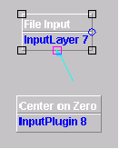
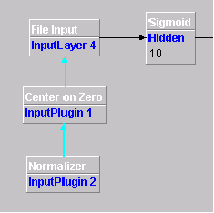

There are four pre-processing plugins implemented, but others can be implemented by extending the org.joone.util.ConverterPlugIn class:
|
Centre on Zero |
This plugin centres the entire data set around the zero axis by subtracting the average value. |
|
Normalizer |
This plugin can normalize an input data stream within a range determined by its min and max parameters. |
|
Turning Points Extractor |
This plugin extracts the turning points of a time series, generating a useful input signal for a neural net, emphasising the relative max and min of a time series (very useful to extract buy and sell instants for stock forecasting). Its minChangePercentage parameter indicates what the minimum change around a turning point should be to consider it a real change of direction of the time series. Setting this parameter to a relative high value helps to reject the noise of the input data. |
| Moving Average |
This plugin calculates the
moving average of a time series for a predefined interval of samples.
Very useful to feed a neural network that must be trained to forecast a
time series. |
| DeltaNormPlugin |
This plugin serves to feed a network with the normalized 'delta' values of a time series. Used along with the TurningPointExtractor plugin is very useful to make time series predictions. |
| ShufflePlugin |
This
plugin 'shuffles' the order of the input patterns at
each epoch. |
| BinaryPlugin |
This plugin is able to convert the input values to binary format |
